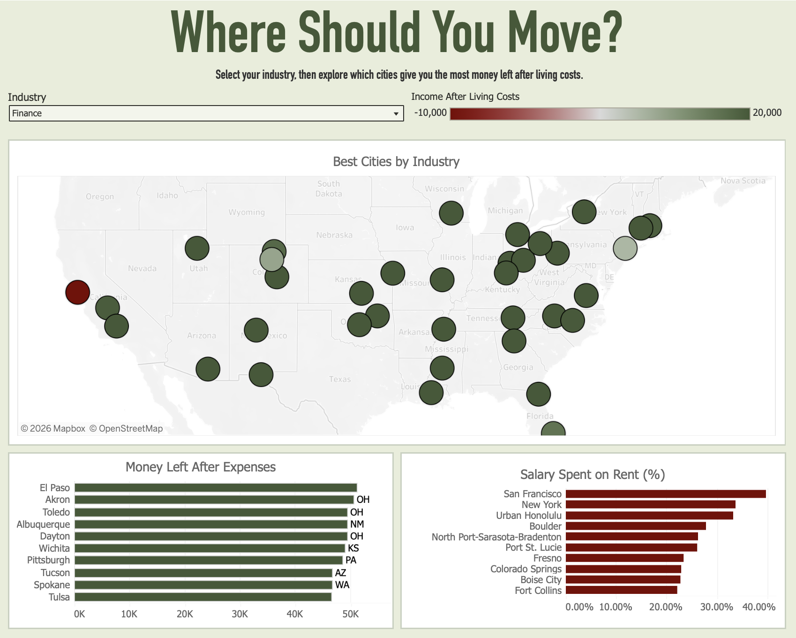
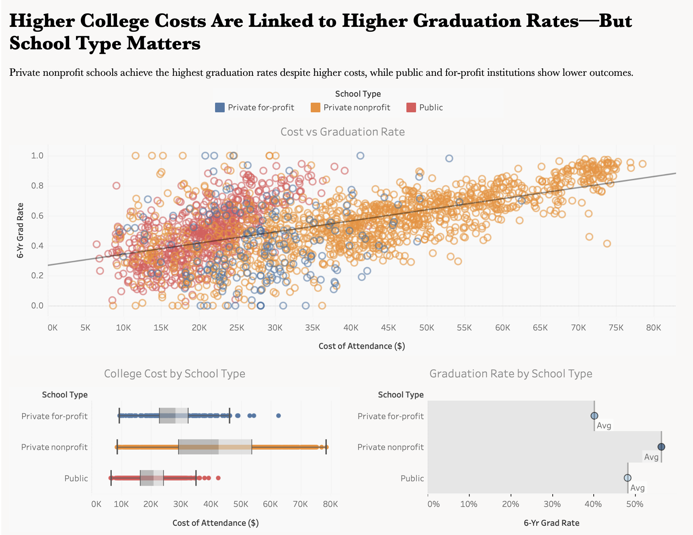
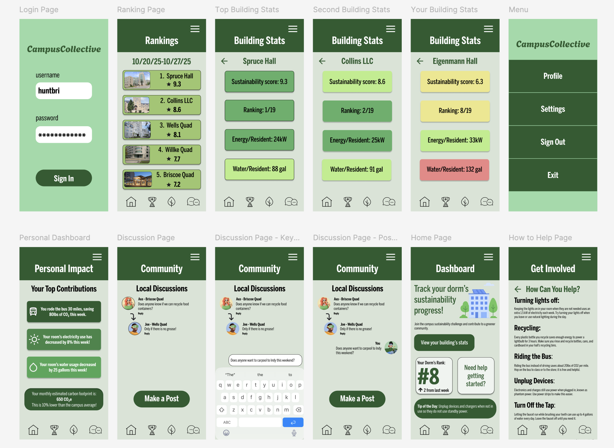
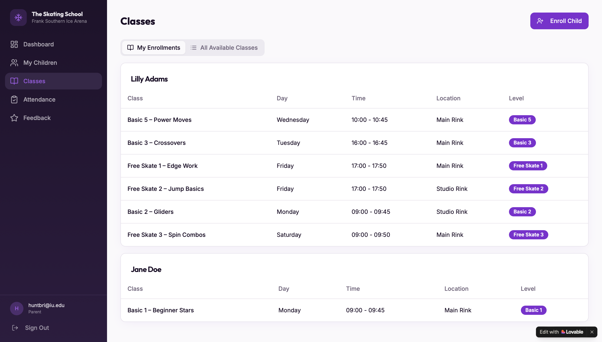
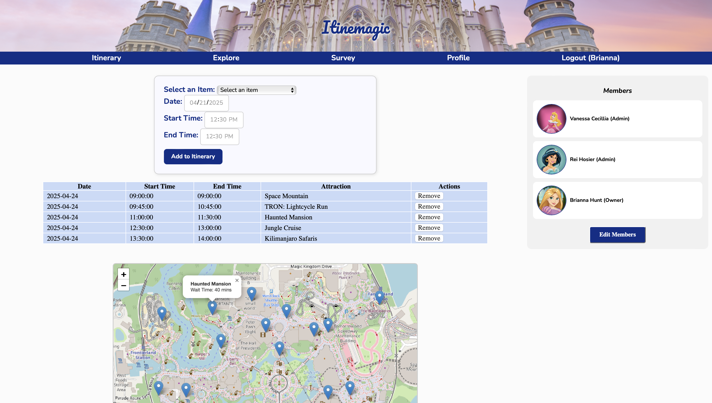
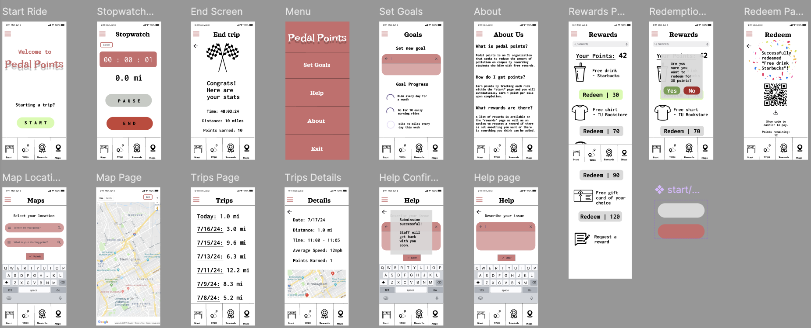
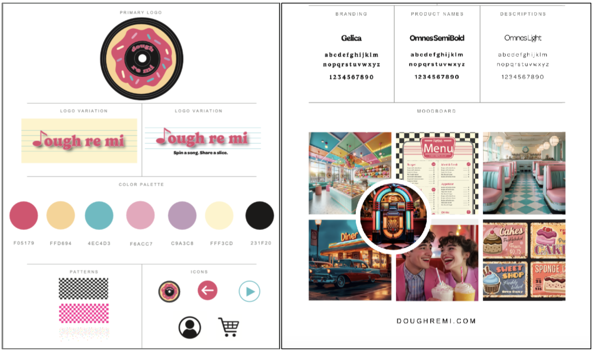
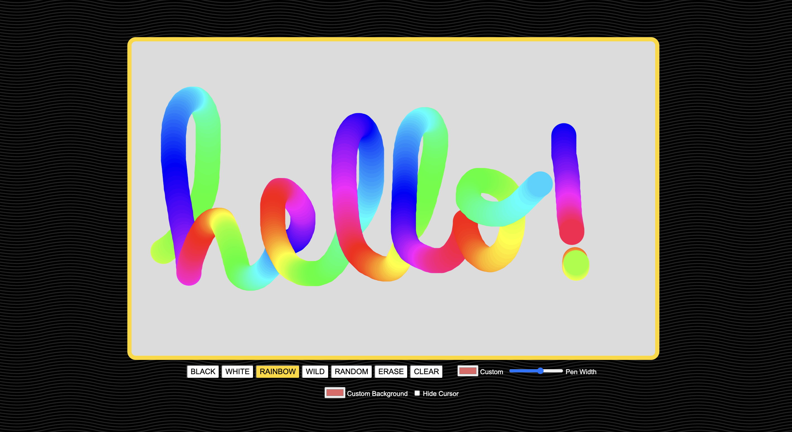
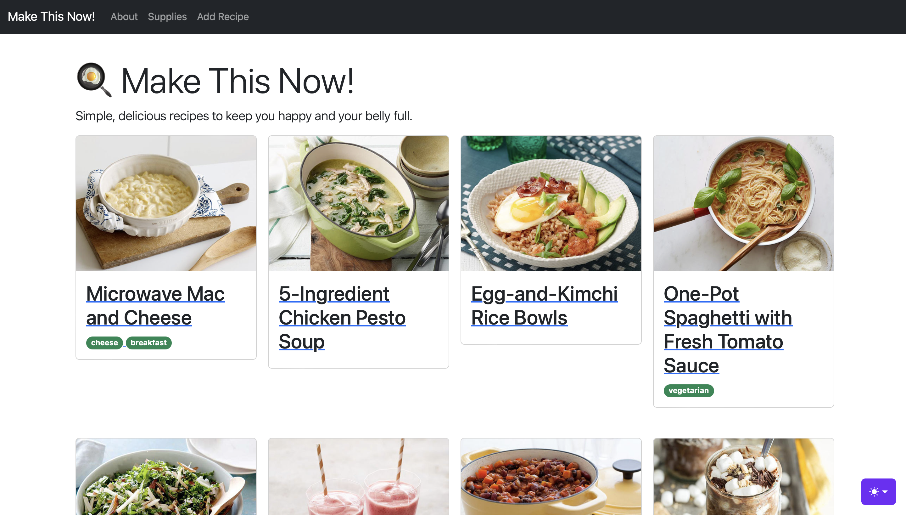

I created this dashboard as a personal project to help friends figure out where to move after college based on their careers. It compares salary, rent, and cost of living across U.S. cities to highlight where you can keep the most money after expenses.
Users can select an industry and interact with the dashboard to explore tradeoffs betweens affordability, income, and location.
Role: Data Analyst

I created this dashboard to explore how college costs relate to 6-year graduation rates across different types of schools. The goal was to better understand whether paying more for college actually leads to better outcomes.
The analysis shows a clear relationship between higher costs and higher graduation rates, especially among private nonprofit schools. However, the variation within each school type suggests that cost alone doesn’t fully explain student success.
Role: Data Analyst

CampusCollective is a solo UX project focused on encouraging more sustainable behavior among college students. Through surveys and observations, I found that while many students care about sustainability, they often lack motivation and accountability in their daily habits.
To address this, I designed a mobile app centered around community engagement and friendly competition. I introduced features like leaderboards, progress tracking, and social interaction to make sustainability feel more engaging and rewarding.
I iterated through three rounds of prototyping and usability testing with 20 students, refining both the user experience and feature set based on feedback. This process helped me focus on clarity, motivation, and ease of use, resulting in a more intuitive and impactful design.
Role: UX Designer, Researcher

Southern Skating Arena is a team project created for a local ice skating rink to help move important tasks online. Our goal was to improve communication, class management, and record keeping for parents, instructors, and administrators.
I worked on the feedback feature, which allows parents to leave ratings and comments for their children’s skating instructors. I used Lovable to help build the feature, then focused on making sure it fit into the larger system and worked clearly for users.
Because the project involves different types of users, security was an important part of the process. I had to make sure actions matched each user's role, so parents could submit feedback, admins could review it, and instructors could only view approved responses. I also thought about testing the feature to make sure feedback was submitted correctly, required fields were completed, and ratings stayed within the expected range.
The project is currently in the process of being adopted by the skating arena, which gave me experience designing for a real client need and building something intended for real users.
Role: UX Designer, Vibe Coder

Itinemagic is a collaborative Disney World itinerary planner built to make trip planning less overwhelming and easier to navigate. Planning a trip usually means jumping between a lot of different tools, so the goal was to bring everything into one place in a way that still felt flexible.
I worked on both the design and development, focusing on the explore pages, interactive map, and login experience. A big part of this project was figuring out how to structure information so users could actually find what they needed without getting lost.
This project pushed me to think about both the user experience and how the system works behind the scenes, using HTML, CSS, JavaScript, PHP, and SQL.
Role: Full-Stack Developer, UX Designer

Pedal Points is a UX project centered on encouraging students to bike more by turning it into something trackable and rewarding.
I designed a mobile app that lets users log their biking miles and earn points they can use around campus. The main focus was making the experience feel motivating without being complicated.
The project went through several rounds of sketches and prototypes, and feedback helped shape how progress, rewards, and tracking were presented so it felt clear and easy to use.
Role: UX Designer

Dough Re Mi is a branding project for a retro-inspired bakery. The goal was to create something that felt fun and memorable without feeling messy or overwhelming.
I started by looking at other bakery brands to understand what made them feel inviting, then built out the logo system, color palette, typography, and supporting visuals in Adobe Illustrator.
Most of the focus was on creating a consistent look that could work across different uses while still feeling distinct.
Role: Brand Designer, UX Designer

SketchPad is a front-end project that lets users draw on a digital canvas with customizable tools.
I focused on building interactions that feel smooth and responsive, especially around input handling and real-time updates. The goal was to keep the interface simple so users could just start drawing without having to think too much about how it works.
Role: Front-End Developer

Make This Now is a full-stack recipe web app designed to make it easier to store, organize, and share recipes.
I built the system using Python, SQL, Flask, and Django, with a focus on how users interact with the data. The goal was to keep the experience straightforward while still supporting features like editing, reviewing, and tagging recipes.
This project helped me think about how structure and usability connect, especially when working with larger sets of information.
Role: Full-Stack Developer
